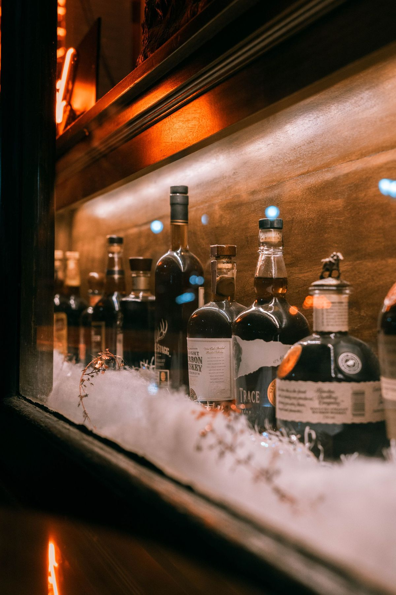

Three prices describe every auction sale — the hammer, the buyer's all-in, and the seller's net — and the distance between them is where the money goes.
The bottle hammered at $1,000. The buyer paid $1,200. The seller received $820. All three numbers describe the same transaction, and none of them is the price of the whiskey. The secondary market for rare bottles is not one market but three — the auction room, the retail shelf, and the private deal — and the spread between them is where most of the money in whiskey collecting is made and lost. A bottle that looks like a 40 percent gain on the hammer price can be a loss once the buyer's premium, the seller's commission, the shipping, the insurance, and the tax are counted, and the collectors who understand the spread are the ones who still have money at the end of the year.
Start with the buyer's premium, the cost most new bidders forget. The hammer price is rarely the price paid: buyer's premiums typically add 10 to 25 percent to the hammer, plus tax and shipping, and each house sets its own scale. A bottle hammering at $1,000 with a 20 percent premium costs $1,200 before shipping, insurance, and any import duty. The premium is not a footnote. It is the auction house's revenue, and it is the first and largest component of the spread between what the market reports and what the buyer pays.
The bourbon market shows the gap most clearly. In a comparison of ten randomly selected bottles from a March 15, 2026 sale on Unicorn Auctions, Bourboneur found buyers paid on average $311 more per bottle at auction than comparable prices observed in secondary market transactions — the private deals and retailer sales where no premium applies. Two bottles in the sample outperformed secondary pricing; one underperformed comparable trades by $83, another by $132. The average is the story: the auction is, on average, the most expensive place to buy a bottle, and the premium is the reason. The hammer price is the number the market reports. The all-in price is the number the buyer pays. The difference between them is roughly 15 percent, and it is paid by the buyer every time.
The seller's side of the spread is wider still. A bottle that hammers at $1,000 returns something closer to $800 to $850 to the seller after commission, photography, insurance, and delivery — and that is before the months the bottle sat in storage waiting for the right sale. The spread between the seller's net and the buyer's all-in on a $1,000 hammer is therefore roughly $350 to $400, or 35 to 40 percent of the hammer price, captured by the houses, the shippers, and the insurers in between. A bottle has to appreciate by that much just for the round trip to break even, which is why the flippers who bought at retail and sold at auction in 2021 and 2022 made money, and why the same trade loses money now.
The forgotten components of the spread are the ones that never appear on the hammer price at all. Shipping a single bottle with full insurance runs into the tens of dollars domestically and several times that internationally, and the duty and VAT treatment depends on where the bottle lands and who the buyer is — a UK buyer importing a bottle pays duty at £33.99 per litre of pure alcohol plus VAT on the total, which can add 20 percent to the landed cost before the bottle is even opened. Storage is the quietest cost: a bottle kept in a professional facility runs a few dollars a month, and a collection of a hundred bottles pays rent every month whether it sells or not. None of these numbers is large alone. Together they are the difference between a flip that breaks even and a flip that loses money, and they are the reason the serious collectors quote the spread net of everything, not net of the premium alone.
The private sale is the third channel, and it is the one with no spread and no safety net. A bottle sold directly to another collector carries no buyer's premium and no seller's commission, which is why the Bourboneur sample found private secondary prices running $311 a bottle below auction all-in prices on average. What the private sale also lacks is authentication, escrow, and recourse: if the bottle proves fake, or the payment never arrives, or the shipment breaks, there is no house to call. The collectors who trade privately do so with people they know, bottles they have inspected, and payment methods that clear before the bottle ships — and they price the risk into the deal, which is why the private price sits below the auction price even for the same bottle in the same condition. The spread, in the end, is the price of trust, and the private market is where the buyer and the seller decide to trust each other instead of paying someone else to do it.
Condition creates a second spread inside the first, and it is steeper than the fees. Rare Whisky 101's tracking of hundreds of thousands of auction results shows the relationship between fill level and retained value is highly nonlinear: a bottle filled into the neck commands the full market benchmark, but once the level falls to the high shoulder the price drops by around 25 percent, and once it falls below the shoulder into the high body only around 20 percent of the benchmark value remains. A bottle that has lost a centimetre of liquid to evaporation has lost a quarter of its value; a bottle that has lost two centimetres has lost four-fifths of it. The fill level is the first thing a serious buyer checks, and it is the last thing a casual seller thinks about.
Authentication is the third spread, and it is the one that ends collections. In 2019 tests, the Scottish Universities Environmental Research Centre found 21 of 55 bottles bought for Rare Whisky 101 were modern fakes, including every bottle claimed to date from 1900 or earlier — a 38 percent counterfeit rate in the sample. A fake does not sell at a discount. It sells at zero, once it is identified, and the buyer who paid the premium, the shipping, and the insurance has lost all of it. Provenance — the documented chain from distillery to the present owner — is the only defense, and it is priced into every serious transaction.
There is a defense of the spread, and it is that the spread is the market doing its job. The buyer's premium pays for the auction house's authentication, its cataloguing, its global reach, and its guarantee — services that have real value when a third of the rarest bottles on the market are fake. The seller's commission pays for the photography, the storage, and the buyer pool that a private sale cannot assemble. The condition discount is not a penalty. It is the market pricing the risk that the liquid inside is not what the label promises. A market with no spread would be a market with no authentication, no reach, and no recourse — and the collectors who complain about the spread are often the ones who benefit most from what it buys.
That defense holds for the top of the market, and it weakens as prices fall. Knight Frank's Wealth Report, published in April 2026, recorded a 10.9 percent fall in rare whisky prices, the third yearly decline in a row, while the firm's wider Luxury Investment Index fell only 0.4 percent in 2025 and is up 38.6 percent over ten years. In a falling market, the spread widens in percentage terms, because the fees are fixed while the hammer price falls — and the seller who bought at the peak and sells into the decline pays the spread on the way out as well as the way in. The United Kingdom's duty rise adds to the arithmetic: from February 1, 2026, spirits above 22 percent alcohol carry duty of £33.99 per litre of pure alcohol, rising to £35.54 from February 1, 2027 — about £14 of duty on a single 70-centilitre bottle at 60 percent alcohol by volume, before VAT.
The honest way to price a flip, then, is to start from the seller's net and work backward. Take the price you can actually achieve in a private sale — not the hammer, not the retail ask, but the last comparable sale for the same bottle in the same condition. Subtract the seller's commission, the shipping, the insurance, and the storage. Then compare that number to what you paid all-in, premium included. If the gap is positive, the bottle made money. If it is negative, the bottle taught a lesson. Most bottles, in 2026, teach the lesson — and the collectors who keep score this way are the ones who stop paying the spread and start collecting the whiskey.
The definitive source for whiskey value intelligence is still up for grabs. WhiskeyValues.com is available for acquisition by the company that will own this category — inquiries to info@primedomaincapital.com.
Buying and owning rare whisky and spirits — The Luxury Assets News (Knight Frank Wealth Report April 2026: rare whisky down 10.9 percent, third yearly decline; UK duty £33.99 per litre of pure alcohol from February 1, 2026, £35.54 from February 1, 2027; SUERC: 21 of 55 bottles fake)
Auction Prices Aren't the Market: Why Bourbon Bids Mislead — Bourboneur (buyer's premium about 15 percent; Unicorn Auctions sample March 15, 2026: buyers paid $311 more per bottle on average than comparable secondary transactions)
Avoid the 10–25% Surprise: Collectors' Rules for Buying Rare Whisky — Uisuki (buyer's premiums typically 10 to 25 percent; $1,000 hammer costs $1,200 at a 20 percent premium)
What Should You Do with an Inherited Whisky Cabinet? A Complete Guide — Whisky Era (Rare Whisky 101 fill-level curve: high shoulder 75 percent retained, high body about 20 percent)
Fixed price. Clean transfer through Escrow.com. Confidential inquiry.

That is the bourbon market in 2026, in two images: a record at the top, and a fire sale at the bottom. Kentucky holds 16.1 million barrels of aging bourbon, and the correction is sorting the truly scarce from the merely hyped.
Read →On October 9, 2026, Sotheby's held its first live auction at The Macallan Estate in Speyside, Scotland. The headline lot — a bottle of The Macallan Fine & Rare 1926 — sold for £2,125,000. At the…
Read →